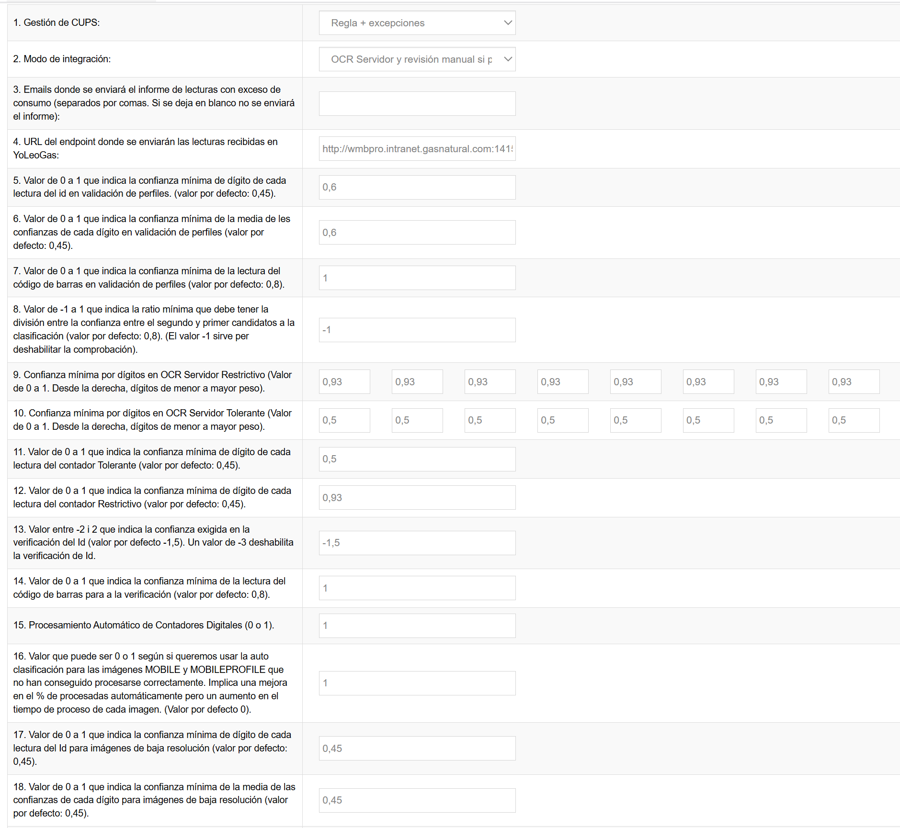

La funcionalidad "Configuración de la Distribuidora" permite a los administradores configurar parámetros específicos para cada distribuidora de gas, controlando aspectos críticos como los umbrales de confianza del OCR, modos de integración, gestión de CUPS (Código Universal del Punto de Suministro), y sistemas de notificaciones automáticas a usuarios finales.

Gestión de CUPS (Código Universal del Punto de Suministro)
Define cómo se gestionan los CUPS en el sistema. En modo “Regla + excepciones” se mantienen tanto las reglas como las excepciones. En modo “Absoluto” se eliminan las reglas y se mantienen solo las excepciones en positivo.
Modo de Integración
Determina el flujo de procesamiento de las lecturas. En modo “Directo” se fuerza automáticamente el envío de lecturas no reconocidas.
Configuración de Emails para Informes
URL de Integración: Endpoint donde se enviarán las lecturas recibidas en YoLeoGas.
Configuración de Umbrales OCR - Validación de Perfiles
Confianza Mínima por Dígito del ID
Confianza Global Mínima del ID
Confianza Mínima del Código de Barras
Ratio de Rechazo para Clasificación
Configuración OCR Servidor - Umbrales Restrictivos
Confianza mínima por dígitos en OCR Servidor Restrictivo, desde la derecha (dígitos de menor a mayor peso).
Configuración OCR Servidor - Umbrales Tolerantes
Confianza mínima por dígitos en OCR Servidor Tolerante, desde la derecha (dígitos de menor a mayor peso).
Configuración OCR Móvil
Confianza Global para Contador Tolerante
Confianza Global para Contador Restrictivo
Umbral para Verificación de ID
Confianza para Verificación de Código de Barras
Procesamiento Automático de Contadores Digitales
Configuración OCR Servidor - Auto Clasificación
Activa la auto clasificación para imágenes MOBILE y MOBILEPROFILE que no se han procesado correctamente. Mejora el porcentaje de procesadas automáticamente pero aumenta el tiempo de proceso.
10. Configuración OCR para Imágenes de Baja Resolución
Confianza Mínima por Dígito del ID
Confianza Global Mínima del ID
Confianza para Código de Barras
11. Configuración de Envío de Lecturas
Enviar Lecturas No Reconocidas
Respuesta Asíncrona
12. Sistema de Notificaciones
Configuración Temporal
Método de Entrega de Resultados